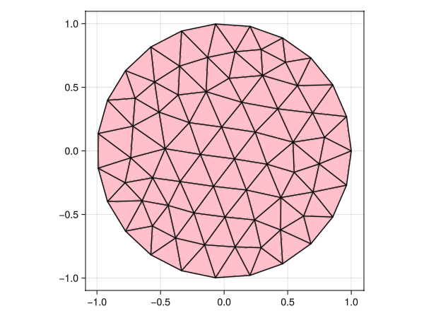
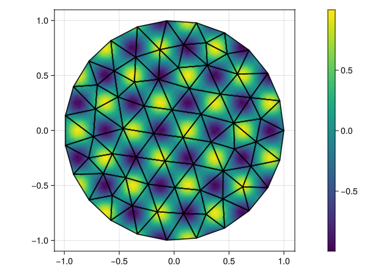
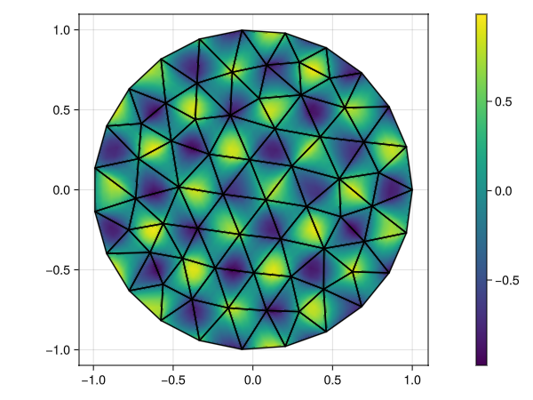
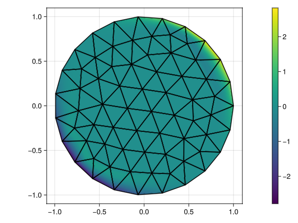
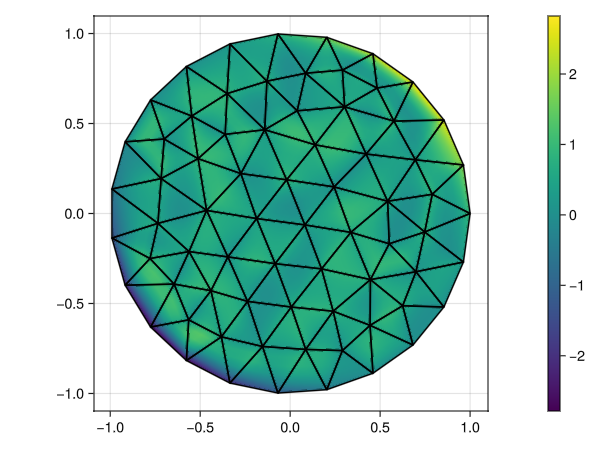
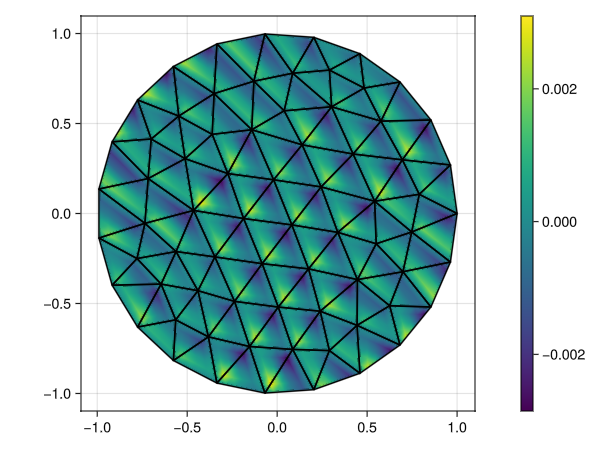

Introduction to the FEM
by Francesc Verdugo (VU Amsterdam)
In this lecture, we will learn:
- The gist of the finite element method (FEM).
- How to solve a simple partial differential equation (PDE) with it.
- How to express the key concepts in code using GalerkinToolkit.
This lecture is useful even if you are a FEM expert if you want to learn GalerkinToolkit. It will walk you through the key parts of the library.
This lecture is made available under a CC BY 4.0 license. The API documentation and source code of GalerkinToolkit is available under an MIT license.
Problem statement
We show how to solve a simple PDE with the FEM. To make this introduction really an introduction we consider the "hello, world" PDE: the Poisson equation. Our goal is to solve it when adding Dirichlet boundary conditions. These are the inputs of the problem. A domain $\Omega\subset\mathbb{R}^d$ with $d$ being the number of spatial dimensions ($d=2$ in this example), and two functions $f$, $g$ such that $f,g:\Omega\rightarrow\mathbb{R}$. The problem is formalized as finding the function $u:\Omega\rightarrow\mathbb{R}$ such that
\[\left\lbrace \begin{aligned} -\Delta u = f \ &\text{in} \ \Omega,\\ u = g \ &\text{on}\ \partial\Omega,\\ \end{aligned} \right.\]
where $\Delta u = \sum_{i=1}^d \partial^2 u / \partial x_i^2$ is the Laplace operator and $\partial\Omega$ is the boundary of $\Omega$. We define $\Omega$ as a disk of radius one. This is a simple geometry, but yet more complex than a simple two-dimensional box. We this, we illustrate that FEM can be used to solve PDEs on complex geometries beyond simple "boxes".
The method of manufactured solutions
We are going to select $f$ and $g$ in such a way $u$ is a known function. This will allow us to compare the numerical approximation computed with FEM against the theoretical exact solution $u$. This technique is known as the "method of manufactured solutions". Note that $u$ is not known in practical applications.
Let us, "manufacture" $f$ and $g$ such that function $u(x)=(\sum_{i=1}^d x_i)^p$ is the solution of the PDE above. The scalar $p$ is a given integer $p>0$. It will be useful to see how the numerical solution will behave for different values of $p$.
To manufacture function $f$ and $g$, we applying the PDE operators to the expression for $u$. Function $f$ is to be computed as $f= -\Delta ((\sum_{i=1}^d x_i)^p)$ and $g$ is simply $g(x)=(\sum_{i=1}^d x_i)^p$. Applying the Laplace operator to $(\sum_{i=1}^d x_i)^p$, we get the closed-form expression for $f$, namely $f(x)= -d*p(p-1)(\sum_{i=1}^d x_i)^{(p-2)}$.
Numerical approximation
The FEM transforms a PDE into a system of linear algebraic equations of the form $Ax=b$, where $A$ is a matrix and $b$ is a vector. This reduces the problem of finding function $u$ to finding vector $x$, which can be done on a computer using arrays and other numeric data structures. The FEM does not look for the exact function $u$, but for approximations of it that can be written as a linear combination of a finite number of basis functions,
\[u^\mathrm{fem}(x)=\sum_{j=1}^N \alpha_j s_j(x),\]
where $\alpha_i$ are the coefficients of the linear combination and $s_i$ are functions such that $s_i:\Omega\rightarrow\mathbb{R}$. The integer $N$ is the number of terms in the linear combination. The basis functions $s_i$ are also called "shape functions" or "hat functions". The goal of FEM is to find suitable values for $\alpha_i$ and $s_i(x)$ such that $u^\mathrm{fem}$ is a good approximation of the exact solution $u$: $u^\mathrm{fem}(x)\approx u(x)$ for points $x\in\Omega$. The more computational effort we put in building function $u^\mathrm{fem}$ the better will be the approximation.
Workflow
Function $u^\mathrm{fem}$ is built as follows. First, we define the auxiliary functions $s_i(x)$. This step is referred to as the "numerical discretization" and entails defining a computational mesh and a finite element (FE) function space. The next step is building a system of linear algebraic equations $Ax=b$. This step is called the "FEM assembly" step. Then, one solves for the vector $x$ in what is called the "solver" or "solution" step. At this points, the coefficients $\alpha_i$ can be computed using both vector $x$ and the Dirichlet boundary conditions of the PDE. The final step is typically some post-process of function $u^\mathrm{fem}$. For instance, visualize it, store it in a file, compute some quantity of interest, etc. In summary, these are the key phases in a FEM computation:
- Discretization
- Assembly
- Solution
- Post-process
Mesh generation
The FEM starts by building a "triangulation" $\mathcal{T}$ of the domain $\Omega$ in which the PDE is defined. A triangulation $\mathcal{T}$ is a set of simpler domains $T_k\subset\mathbb{R}^d$, whose union is an approximation of $\Omega$, $\cup_{k=1}^M T_k\approx\Omega$. Each domain $T_k$ is called an "element", a "cell" or a "face", and they are typically simple geometries such as triangles, tetrahedra, hexahedra, etc. The integer $M$ denotes the number of elements. The triangulation is also called a computational "mesh" or a computational "grid".
Let's build a mesh for our domain $\Omega$ using code. First, let us load all packages that we will use in this lecture:
using LinearAlgebra
using Random
import GalerkinToolkit as GT
import PartitionedSolvers as PS
import ForwardDiff
import GLMakie as MakieA common practice in GalerkinToolkit is to load packages in the Julia standard library with using. Other packages are loaded with import. This makes clear from which package each function comes from, while assuming that developers already know functions in the standard library.
The following cell builds a triangulation (a mesh object) using the external mesh generation tool GMSH. The variable mesh_size controls how small are the cells in the mesh. We start with a coarse mesh to make visualization easier. We are not going to comment in detail all code lines. We will discuss only the parts relevant in this high-level introduction. You can refer to the API documentation and other tutorials when needed.
mesh_size = 0.3
R = 1 #Radius
mesh = GT.with_gmsh() do gmsh
dim = 2
gmsh.option.set_number("General.Verbosity", 2)
circle_tag = gmsh.model.occ.add_circle(0,0,0,R)
circle_curve_tag = gmsh.model.occ.add_curve_loop([circle_tag])
circle_surf_tag = gmsh.model.occ.add_plane_surface([circle_curve_tag])
gmsh.model.occ.synchronize()
gmsh.model.model.add_physical_group(dim,[circle_surf_tag],-1,"Omega")
gmsh.option.set_number("Mesh.MeshSizeMax",mesh_size)
gmsh.model.mesh.generate(dim)
GT.mesh_from_gmsh(gmsh)
endThe mesh we just created can be visualized both with Paraview and Makie. We use Makie in this lecture.
aspect = Makie.DataAspect()
shading = Makie.NoShading
kwargs = (;axis=(;aspect),shading)
GT.makie_surfaces(mesh;color=:pink,kwargs...)
GT.makie_edges!(mesh;color=:black)
Computational domains
Note that two domains appear in the definition of the PDE above, the domain $\Omega$ and its boundary $\partial\Omega$. We need to build data objects representing them to solve the PDE with GalerkinToolkit. They are built from the mesh objects as follows:
Ω = GT.interior(mesh)and
∂Ω = GT.boundary(mesh)We can also visualize them using Makie.
GT.makie_surfaces(Ω;color=:pink,kwargs...)
GT.makie_edges!(∂Ω;color=:blue,linewidth=3)Note that Ω is indeed an approximation of the unit disk (visualized as a pink surface), and ∂Ω is its boundary (visualized with thick blue lines).
FE space
Let us now build the data structure representing the finite element function $u^\mathrm{fem}$. We need two ingredients, the functions $s_i$ and the coefficients $α_i$. Functions $s_i$ are linearly independent and can be understood as the basis of a vector space $V=\mathrm{span}\{s_1,\ldots,s_N\}$. This space is called the FE space. There are many ways of defining FE spaces. Here, we will use the simplest one, which is based on Lagrange polynomials. To build it with GalerkinToolkit, we need the computational domain on which the functions of the space are defined and their polynomial degree, since these function are polynomials inside the cells of the mesh.
degree = 2
V = GT.lagrange_space(Ω,degree)We will discus the mathematical derivation of this FE space in another lecture. For now, it is enough to understand that the object V has information about the basis functions $s_i$. For instance, you can get the number of basis functions with
N = GT.num_dofs(V)258The word "dofs" stands for degrees of freedom (DOFs). Each coefficent $\alpha_i$ can be understood as a degree of freedom, i.e., a quantity that can be tweaked to modify function $u^\mathrm{fem}$.
The coefficients $\alpha_i$ are unknown at this point. We will compute them later. For the moment, we can build a mock $u^\mathrm{fem}$ using some random coefficients $\alpha_i$ just to see the connection between the coefficients $\alpha_i$ and the resulting function $u^\mathrm{fem}$. We create them as a random vector of length $N$.
Random.seed!(1)
α = rand(N)We create the function from these coefficients and the FE space as follows:
u_fem = GT.discrete_field(V,α)As suggested by the function name, the numerical approximation is called "discrete field" in GalerkinToolkit. The field is "discrete" since it is expressed in terms of a finite number of degrees of freedom.
Let's us visualize it. We do this by plotting domain $\Omega$, using the function value as the color code.
fig = Makie.Figure()
_,scene = GT.makie_surfaces(fig[1,1],Ω;color=u_fem,refinement=5,kwargs...)
GT.makie_edges!(fig[1,1],Ω,color=:black)
Makie.Colorbar(fig[1,2],scene)
By looking into the figure it is clear that function $u^\mathrm{fem}(x)$ is indeed a function that can be evaluated at any point inside the domain $\Omega$, i.e., a field.
Dual operators
The FEM also consider a basis for $V^\prime$, the dual space of $V$. Basis functions in the dual space are linear operators $\sigma_i:V\rightarrow\mathbb{R}$ that map functions in the original (primal) space $V$ into real values. The particular definition of these operators is not important in this lecture. See them as black boxes, that fulfill these properties: The operators $\sigma_i$ are linear, there is one operator $\sigma_i$ for each shape function $s_i$, and they are related with this formula $\sigma(s_j)=\delta_{ij}$, where $\delta_{ij}$ is Kroneker's delta. Operator $\sigma_i$ maps the shape function $s_i$ to one, $\sigma_i(s_i)=1$, and maps the other shape functions to zero, $\sigma_i(s_j)=0$ for $i\neq j$. This property allows us to compute $\alpha_i$ as the application of operator $\sigma_i$ to the numerical approximation $u^\mathrm{fem}$, namely $\alpha_i=\sigma_i(u^\mathrm{fem})$. You can understand $\sigma_i(u^\mathrm{fem})$ as "extract" coefficient $\alpha_i$ from $u^\mathrm{fem}$. You can easily prove this by taking $\sigma_i(u^\mathrm{fem}) = \sigma_i(\sum_{j=1}^N \alpha_j s_j)$ and considering that $\sigma_i$ is linear and $\sigma_i(s_j)=\delta_{ji}$.
FE interpolation
Using the dual operators, we can define an interpolation operator that builds a function in the FE space $V$ from a given function $f:\Omega\rightarrow\mathbb{R}$ :
\[(\Pi^\mathrm{fem} f)(x) = \sum_{j=1}^N \sigma_j(f) s_j(x)\]
Let us do this interpolation using code for a particular function. First, we need to define the function we want to interpolate
f = GT.analytical_field(Ω) do x
sin(4*pi*x[1])*cos(4*pi*x[2])
endWe have build an "analytical field", which is a field defined by an analytical function. Let us visualize it.
fig = Makie.Figure()
_,scene = GT.makie_surfaces(fig[1,1],Ω;color=f,refinement=5,kwargs...)
GT.makie_edges!(fig[1,1],Ω,color=:black)
Makie.Colorbar(fig[1,2],scene)
We interpolate the field using code
f_fem = GT.interpolate(f,V)and we visualize the result
fig = Makie.Figure()
_,scene = GT.makie_surfaces(fig[1,1],Ω;color=f_fem,refinement=5,kwargs...)
GT.makie_edges!(fig[1,1],Ω,color=:black)
Makie.Colorbar(fig[1,2],scene)
Note that the interpolated field is an approximation of the original one. The "noisier" the original field, the worse will be the interpolation. Also the larger the number of DOFs in the space $V$ the better will be the interpolation.
Free and Dirichlet DOFs
Remember that our goal is to find the coefficients $α_i$. Most of them are unknown, but not all. Note that the PDE states that $u=g$ on the boundary $\partial\Omega$. With this information we can compute some of the coefficients $\alpha_i$ directly, without solving a linear system. To find out which coefficients are really unknown and which can be computed from the boundary condition, we classify the shape functions $s_i$ into two groups: the $s_i$ that are zero at any point of the boundary, $s_i(x) = 0$ for all $x\in\partial\Omega$, in one group, and the rest in the second group. We denote $s^\mathrm{f}_i$ the shape function number $i$ in the first group, and $s^\mathrm{d}_i$ function number $i$ in the second group. Letters "f" and "d" stand for "free" and "Dirichlet" as they will be associated with unknown (free) coefficients and coefficients computed from the Dirichlet condition respectively. Using this classification of the shape functions, we can also classify the coefficients $\alpha_i$, and the dual operators $\sigma_i$. Consider $\star\in(\mathrm{f},\mathrm{d})$. The coefficient $\alpha^\star_i$ is the one that multiplies $s^\star_i$ and $\sigma^\star_i$ is its associated dual operator. We can also define the space $V^\star=\mathrm{span}\{s^\star_1,\ldots,s^\star_{N^\star}\}$ as the subspace of $V$ generated by the shape functions $s^\star_i$. Finally, we call $N^\star$ the number of shape functions $s^\star_i$ for $\star\in(\mathrm{f},\mathrm{d})$, i.e, the number of free and Dirichlet DOFs.
The shape functions are classified in the code by creating a FE space that is aware of the Dirichlet boundary:
V = GT.lagrange_space(Ω,degree;dirichlet_boundary=∂Ω)Now the DOFs in this space are split on two groups: free and Dirichlet. We can get the number of free DOFs
N_f = GT.num_free_dofs(V)212and the number of Dirichlet DOFs.
N_d = GT.num_dirichlet_dofs(V)46Dirichlet Field
Using the classification of nodes, we can decompose function $u^\mathrm{fem}(x)$ as the sum of two functions,
\[u^\mathrm{fem}(x)=u^\mathrm{f}(x)+u^\mathrm{d}(x)\]
with
\[u^\star(x)=\sum_{j=1}^{N^\star} \alpha^\star_j s^\star_j(x) \text{ for } \star\in(\mathrm{f},\mathrm{d})\]
Note that $u^\mathrm{f}\in V^\mathrm{f}$ is a linear combination of the "free" shape functions, and $u^\mathrm{d}\in V^\mathrm{d}$ is a linear combination of the "Dirichlet" shape functions. This decomposition is useful because $u^\mathrm{d}$ can be directly computed from the Dirichlet Boundary condition. We refer to $u^\mathrm{d}$ as the "Dirichlet field". It is computed by building the coefficients $\alpha^\mathrm{d}_i=\sigma^\mathrm{d}_i(g)$ as the application of the linear operators for the Dirichlet DOFs on function $g$. In other words, $u^\mathrm{d}$ is built as the interpolation of the Dirichlet function $g$ onto the space $V^\mathrm{d}$, $u^\mathrm{d}=\Pi^\mathrm{d} g$. The interpolation to the spaces $V^\mathrm{f}$ and $V^\mathrm{d}$ of a given funciton $f$ is defined as we did for $V$, but only taking the corresponding shape functions:
\[(\Pi^\star f)(x) = \sum_{j=1}^{N^\star} \sigma^\star_j(f) s^\star_j(x) \text{ for } \star\in(\mathrm{f},\mathrm{d}).\]
Let us build the Dirichlet field with code. First, we need to build an analytical field representing the Dirichlet function. We take $p=3$ for example.
g = GT.analytical_field(Ω) do x
sum(x)^3
endThen, we interpolate this field, but only on the Dirichlet DOFs, yielding the Dirichlet field
u_d = GT.interpolate_dirichlet(g,V)GalerkinToolkit.DiscreteField(…)Note that it is a function that (by definition) is possibly non-zero near the Dirichlet boundary.
fig = Makie.Figure()
_,scene = GT.makie_surfaces(fig[1,1],Ω;color=u_d,refinement=5,kwargs...)
GT.makie_edges!(fig[1,1],Ω,color=:black)
Makie.Colorbar(fig[1,2],scene)
Using the Dirichlet field, we can create function $u^\mathrm{fem}$ only from coefficients that are associated with free DOFs. These are going to be computed later by solving a system of linear equations, but we can create a mock version of them with randomly generated values. We generate a vector of length $N^\mathrm{f}$ because it should contain only "free" coefficients.
Random.seed!(2)
α_f = rand(N_f)
u_fem = GT.solution_field(u_d,α_f)In the following figure, one can see that $u^\mathrm{fem}$ generated in this way has random values in the interior of $\Omega$, while matching the Dirichlet boundary condition on $\partial\Omega$.
fig = Makie.Figure()
_,scene = GT.makie_surfaces(fig[1,1],Ω;color=u_fem,refinement=5,kwargs...)
GT.makie_edges!(fig[1,1],Ω,color=:black)
Makie.Colorbar(fig[1,2],scene)
The weighted residual method
To solve the problem now, we need to find the coefficients $\alpha^\mathrm{f}_i$ associated with the free DOFs. The number of such coefficients is $N^\mathrm{f}$. Hence, we have $N^\mathrm{f}$ unknowns, which suggests that we needs to consider $N^\mathrm{f}$ equations. These equations will follow from the PDE above.
Let us introduce the residual of the PDE, namely $r(v) = \Delta v + f$ for a given function $v$. The operator $r$ is such that $r(u)=0$ for the exact solution of the PDE. The residual provides an estimation of how good a function approximates the solution of the PDE. If $r(v)$ is "small", then $v$ is a good approximation of $u$ as long as $v$ also fulfills the Dirichlet boundary condition $v=g$ on $\partial\Omega$. Our goal is to find the coefficients $\alpha^\mathrm{f}_i$ for which the resulting function $u^\mathrm{fem}$ has a "small" residual $r(u^\mathrm{fem})$. This approach however requires some caution. First, we need to define what "small" is. The second problem is that we cannot evaluate $r(u^\mathrm{fem})$ as this value it is not well defined for all points $x\in\Omega$. Function $u^\mathrm{fem}$ is continuous, but its gradient is not continuous at the boundaries of the mesh cells. As a consequence the Laplace operator and the residual $r$ it is not well defined on the cell boundaries.
Let us visualize one of the components of the gradient of $u^\mathrm{fem}$ to confirm that it is discontinuous. First, let us define the nabla operator.
∇ = ForwardDiff.gradientThen, we visualize the first component of the gradient as follows:
fig = Makie.Figure()
grad1 = x->∇(u_fem,x)[1]
_,scene = GT.makie_surfaces(fig[1,1],Ω;color=grad1,refinement=5,kwargs...)
GT.makie_edges!(fig[1,1],Ω,color=:black)
Makie.Colorbar(fig[1,2],scene)
It is indeed discontinuous at the mesh cell boundaries.
The FEM solves this problem by considering to so-called "weighted residual method". First, the method provides a formal definition for what a "small" residual is. The method looks for a function $u^\mathrm{fem}$ such that
\[\int_\Omega r(u^\mathrm{fem}) s^\mathrm{f}_i \ d\Omega = 0 \text{ for } i=1,\ldots,N^\mathrm{f}.\]
That is, we want the integral of the residual times a free shape function $s^\mathrm{f}_i$ to be zero. Each free shape function provides an equation. Thus, the number of total equations that we build with this expression is $N^\mathrm{f}$, which coincides with the number of unknowns. Perfect!
Now, we need to address the second problem: we need to avoid computing $\Delta u^\mathrm{fem}$ as this quantity is not well defined for function $u^\mathrm{fem}$ on cell boundaries. Let us expand the integral above, by in-lining the definition of $r$:
\[\int_\Omega ( (\Delta u^\mathrm{fem}) s^\mathrm{f}_i + f s^\mathrm{f}_i )\ d\Omega = 0\]
We can get rid of the Laplace operator by using this identity
\[\nabla\cdot(\nabla u^\mathrm{fem} s^\mathrm{f}_i) = (\Delta u^\mathrm{fem}) s^\mathrm{f}_i + \nabla u^\mathrm{fem} \cdot \nabla s^\mathrm{f}_i,\]
or equivalently
\[ (\Delta u^\mathrm{fem}) s^\mathrm{f}_i = \nabla\cdot(\nabla u^\mathrm{fem} s^\mathrm{f}_i) - \nabla u^\mathrm{fem} \cdot \nabla s^\mathrm{f}_i.\]
This identity is analogous to the well known rule for the derivative of a product, but when the functions are multivariate functions. The quantity $\nabla v$ is the gradient of the scalar function $v$, which is a vector defined as $[\nabla v]_k = \partial v/\partial x_k$. The value $\nabla\cdot w$ is the divergence of a vector function $w$, which is defined as $\nabla\cdot w = \sum_k^d \partial w_k/\partial x_k$.
Substituting for $(\Delta u^\mathrm{fem}) s^\mathrm{f}_i$ in the integral above, we get:
\[\int_\Omega (\nabla\cdot(\nabla u^\mathrm{fem} s^\mathrm{f}_i) - \nabla u^\mathrm{fem} \cdot \nabla s^\mathrm{f}_i + f s^\mathrm{f}_i)\ d\Omega = 0.\]
We still have a second order derivative in the first term inside the integral. We can take rid of this one using the Gauss divergence theorem:
\[\int_\Omega \nabla\cdot(\nabla u^\mathrm{fem} s^\mathrm{f}_i) \ d\Omega = \int_{\partial\Omega} n\cdot(\nabla u^\mathrm{fem} s^\mathrm{f}_i)\ d\partial\Omega,\]
where $n$ is the unit normal vector on the boundary $\partial\Omega$ pointing outwards to $\Omega$. Note that the right hand side is an integral on the boundary and we classified the shape functions so that all $s^\mathrm{f}_i$ are zero at the boundary. Using $s^\mathrm{f}_i(x)=0$ for any $x\in\partial\Omega$, we get:
\[\int_{\partial\Omega} n\cdot(\nabla u^\mathrm{fem} s^\mathrm{f}_i)\ d\partial\Omega = 0.\]
Using this result and rearranging terms, we get this new formulation of our equations:
\[ \int_\Omega \nabla u^\mathrm{fem} \cdot \nabla s^\mathrm{f}_i \ d\Omega = \int_\Omega f s^\mathrm{f}_i \ d\Omega \text{ for } i=1,\ldots,N^\mathrm{f}.\]
Note that this new formulation does not require computing second order derivatives. Thus, it is well suited for the numerical approximation $u^\mathrm{fem}$. This equation is called the "weak form" of the PDE, since it puts weaker regularity requirements to the numerical approximation $u^\mathrm{fem}$. In contrast, the original PDE formulation is called the "strong form". There are different types of weak forms. Each one is designed for a type of numerical approximation and PDE. This one is for the Poisson equation and continuous approximations with discontinuous gradients. Other weak forms exist for this PDE. For instance, "discontinuous Galerkin" methods build the numerical approximation such as it is discontinuous across cell boundaries. One needs to to consider other another weak form for this case, since we cannot even compute the gradient on cell boundaries.
System of linear algebraic equations
Let us rewrite the weak equation as $a(u^\mathrm{fem},s^\mathrm{f}_i) = \ell(s^\mathrm{f}_i)$ with
\[a(u^\mathrm{fem},s^\mathrm{f}_i) = \int_\Omega \nabla u^\mathrm{fem} \cdot \nabla s^\mathrm{f}_i \ d\Omega\]
and
\[\ell(s^\mathrm{f}_i)= \int_\Omega f s^\mathrm{f}_i \ d\Omega.\]
If we substitute
\[u^\mathrm{fem} = \sum_{j=1}^{N^\mathrm{f}}\alpha^\mathrm{f}_j s^\mathrm{f}_j +\sum_{j=1}^{N^\mathrm{d}}\alpha^\mathrm{d}_j s^\mathrm{d}_j,\]
we get
\[\sum_{j=1}^{N^\mathrm{f}}a(s^\mathrm{f}_j,s^\mathrm{f}_i)\alpha^\mathrm{f}_j = \ell(s^\mathrm{f}_i) - \sum_{i=1}^{N^\mathrm{d}}a(s^\mathrm{d}_j,s^\mathrm{f}_i)\alpha^\mathrm{d}_j \text{ for } i=1,\ldots,N^\mathrm{f}.\]
We have used the face that $a$ is linear in each one of its arguments to move it inside the sums. If we look closer, this can be written in matrix form as
\[A^\mathrm{f}\alpha^\mathrm{f} = b - A^\mathrm{d}\alpha^\mathrm{d}\]
where $\alpha^\mathrm{f}$ and $\alpha^\mathrm{d}$ are two vectors containing the coefficients $\alpha^\mathrm{f}_i$ and $\alpha^\mathrm{d}_i$ respectively. Values $A^\mathrm{f}$ and $A^\mathrm{d}$ are matrices, and $b$ is a vector. They are defined as
\[[A^\mathrm{f}]_{ij} = a(s^\mathrm{f}_j,s^\mathrm{f}_i),\]
\[[A^\mathrm{d}]_{ij} = a(s^\mathrm{d}_j,s^\mathrm{f}_i),\]
and
\[[b]_{i} = \ell(s^\mathrm{f}_i).\]
Solving for $\alpha^\mathrm{f}$, we find the unknown coefficients in $u^\mathrm{fem}$.
In code, we can build these two matrices and vector using a high-level API. First, we define a measure object that allows us to do the integrals over $\Omega$. This object uses a numerical quadrature internally. So, we need to specify the polynomial degree that we want to integrate exactly. Two times the degree of the interpolation space is a good rule of thumb.
integration_degree = 2*degree
dΩ = GT.measure(Ω,integration_degree)Then, we need to define the field representing function $f$
f = GT.analytical_field(Ω) do x
p=3
-2*p*(p-1)*sum(x)^(p-2)
endand functions representing $a$ and $\ell$.
a = (u,v) -> GT.∫(x->∇(u,x)⋅∇(v,x), dΩ)
ℓ = v -> GT.∫(x->f(x)*v(x), dΩ)Now, we can create the matrix and the vector for free DOFs
K_f = GT.assemble_matrix(a,Float64,V,V)
b = GT.assemble_vector(ℓ,Float64,V)We can also assembly the matrix for the Dirichlet DOFs using an optional argument. Here, we are asking for "free" rows and "Dirichlet" columns.
free_or_dirichlet = (GT.FREE,GT.DIRICHLET)
K_d = GT.assemble_matrix(a,Float64,V,V;free_or_dirichlet)Note that to build the final right-hand-side of the system, we compute $b-K^\mathrm{d}\alpha^\mathrm{d}$ and we need the Dirichlet coefficients $\alpha^\mathrm{d}$. They can be taken from the Dirichlet field that we created before.
α_d = GT.dirichlet_values(u_d)Now, we have all ingredients to build and solve the algebraic system:
α_f = K_f\(b-K_d*α_d)We can finally create the function $u^\mathrm{fem}$ from the computed coefficients.
u_fem = GT.solution_field(u_d,α_f)There is a more compact (and efficient) way of building and solving the system. This one generates matrices $K^\mathrm{f}$ and $K^\mathrm{d}$ in a single loop internally. We create a linear problem object, we solve it, and we extract the solution field from it. This approach automatically handles the Dirichlet boundary conditions.
p = GT.PartitionedSolvers_linear_problem(u_d,a,ℓ)
s = PS.solve(p)
u_fem = GT.solution_field(u_d,s)Finally, we visualize the computed FEM solution.
fig = Makie.Figure()
_,scene = GT.makie_surfaces(fig[1,1],Ω;color=u_fem,refinement=5,kwargs...)
GT.makie_edges!(fig[1,1],Ω,color=:black)
Makie.Colorbar(fig[1,2],scene)Let us also define the manufactured solution $u$
u = GT.analytical_field(Ω) do x
sum(x)^3
endand visualize it
fig = Makie.Figure()
_,scene = GT.makie_surfaces(fig[1,1],Ω;color=u,refinement=5,kwargs...)
GT.makie_edges!(fig[1,1],Ω,color=:black)
Makie.Colorbar(fig[1,2],scene)They look very similar. It seems that we solved the PDE correctly (but we still need to conform it mathematically).
FE error
Lets us introduce the error field, i.e., the difference between the exact and numerical solution, $e^\mathrm{fem}(x) = u(x)- u^\mathrm{fem}(x)$.
e_fem = x -> u(x) - u_fem(x)Visualize it.
fig = Makie.Figure()
_,scene = GT.makie_surfaces(fig[1,1],Ω;color=e_fem,refinement=5,kwargs...)
GT.makie_edges!(fig[1,1],Ω,color=:black)
Makie.Colorbar(fig[1,2],scene)
Note that the error is not zero! Functions $u$ and $u^\mathrm{fem}$ are not the same, the last one is just an approximation. The result looks promising, but how do we know for sure that this is the expected approximation? This is what we will learn in the next lecture!
Conclusion
We learned the key ingredients to solve a PDE with the FEM. This requires to define a discrete space, and look for a solution in this space that makes the residual of the PDE "small". To properly define what a "small" residual is, we used the weighted residual method. This also allowed us to rewrite the PDE into a new form called the weak form. This weak form is needed, because only the residual of the weak form makes sense for functions in the discrete space. We also learned that part of the coefficients of the numerical approximation are unknown. A subset of them can be computed directly by interpolating the Dirichlet boundary condition. We used the method of manufactured solutions to build a PDE with known solution so that we can compare it with the computed approximation. We also learned how to represent all these concepts using GalerkinToolkit. In the next lecture, we will learn how to confirm that our computed approximation is mathematically correct.
This page was generated using Literate.jl.